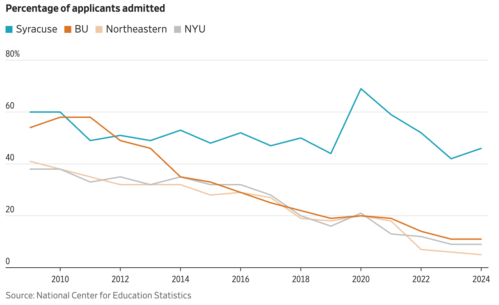

Visualization A (the stronger one)

Source: The Wall Street Journal, "[article title]", [publication date], [link]. Chart: "Percentage of applicants admitted". Data: U.S. National Center for Education Statistics.
What it shows
A line chart of the admit rate (the percentage of applicants offered a place) at four private universities: Syracuse, Boston University (BU), Northeastern and New York University (NYU), from 2009 to 2024. Year is on the x-axis, admit rate (0–80%) on the y-axis, and color identifies the university.
The story & whose story
The audience is WSJ readers, including families comparing universities. Color carries the story: Syracuse, in bright teal and listed first in the legend, stays between about 42% and 69%, while the other three fall from roughly 40–55% in 2009 to about 5–11% by 2024. The implied story is "Syracuse did not follow its peers into extreme selectivity", but the title only names the variable, so readers must infer it. This is the institutions' story. Applicants are invisible: an admit rate is a ratio, so a falling rate can mean more applications rather than fewer places, and the chart shows neither number. Nor does it say who is admitted, or why these three peers were chosen.
Design critique
Clarity: Mostly clear: one variable, light gridlines, and a legend in the same top-to-bottom order as the lines in 2009. But the light peach (Northeastern) and gray (NYU) lines run close together and cross several times, so they are hard to tell apart. Labels at the line ends would fix this.
Accuracy: The y-axis starts at zero and the years are evenly spaced, so the gaps between universities aren't exaggerated. Rates are the right measure for comparing universities of different sizes.
Efficiency: A line chart suits a trend over time across four groups. Giving Syracuse the strongest color is a non-arbitrary choice, but BU's saturated orange competes with it. If the story is "Syracuse vs. the rest", the three peers could all be gray.
Context: The source is given, but the most dramatic feature, Syracuse's jump to about 69% in 2020, has no annotation. It coincides with the first pandemic admissions cycle, but the chart can't tell us whether that's the reason.
Ethics & trust: A neutral tone, no alarming title or colors, and an honest scale: it earns trust. One risk: setting Syracuse's high rate beside its peers invites readers to equate "less selective" with "worse", which the data alone can't support.
Verdict & one improvement
A strong, honest chart, held back by a title that doesn't state its point. The one improvement: a title that states the finding, e.g., "Syracuse admits far more of its applicants than its peers".